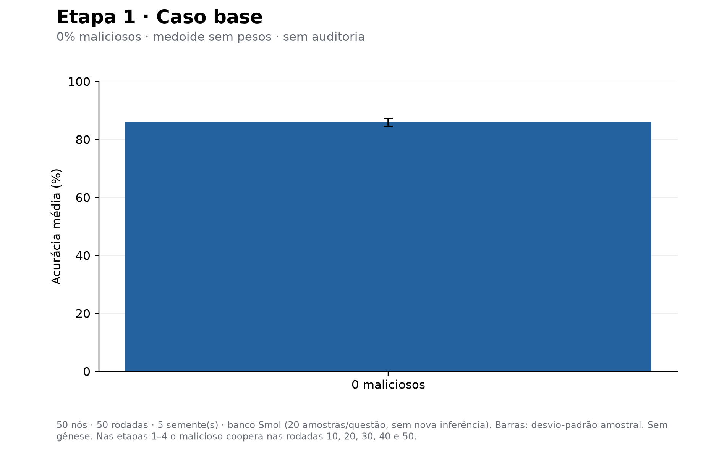
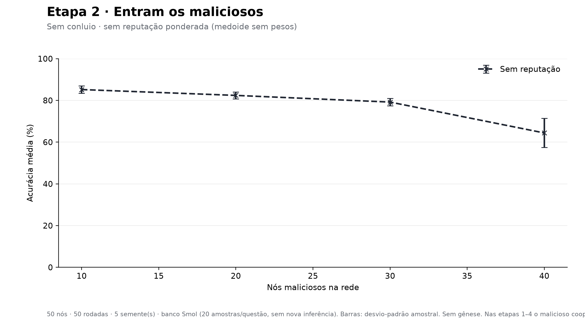
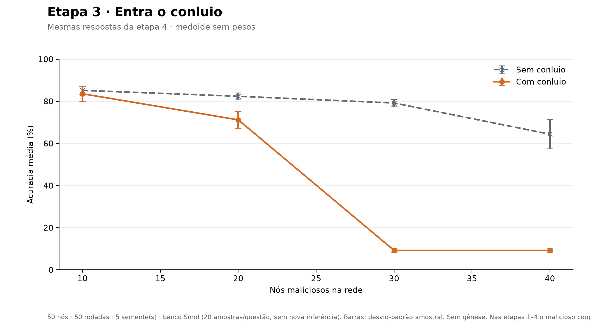
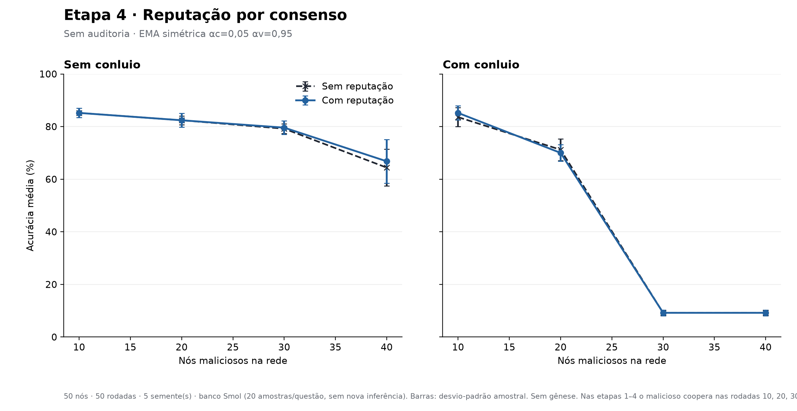
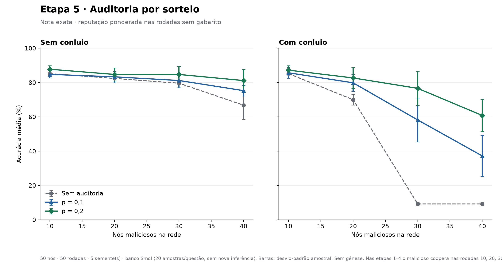
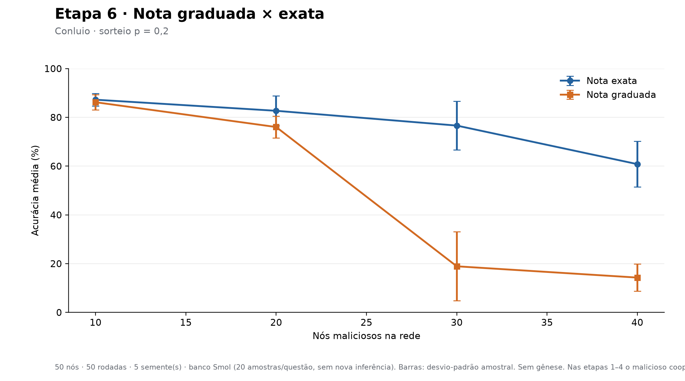
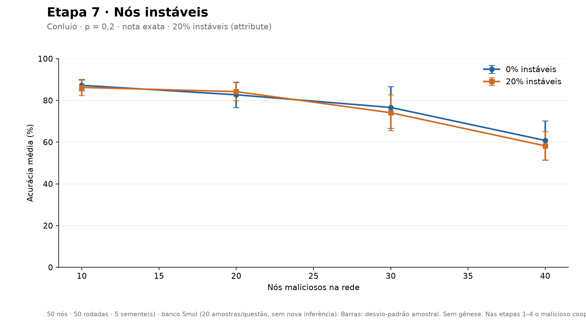
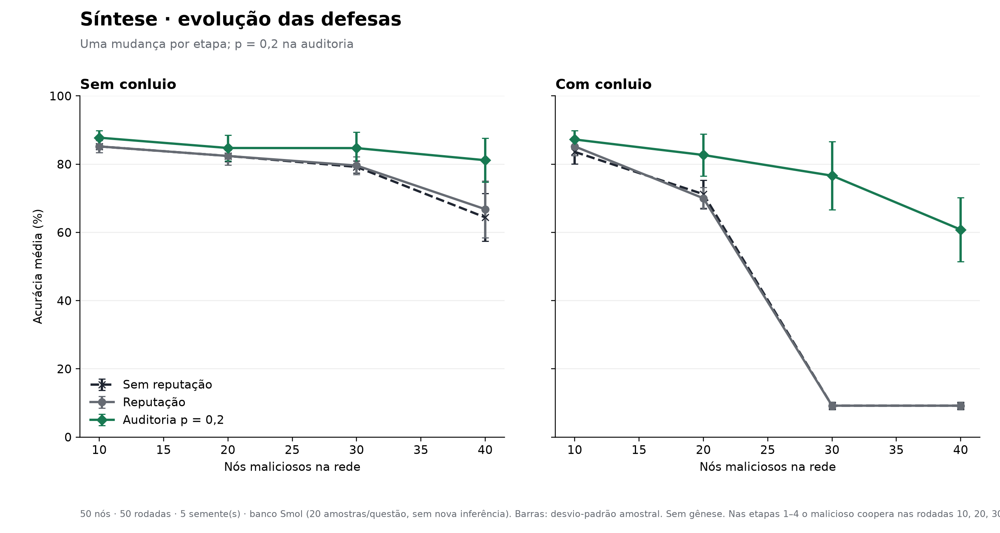
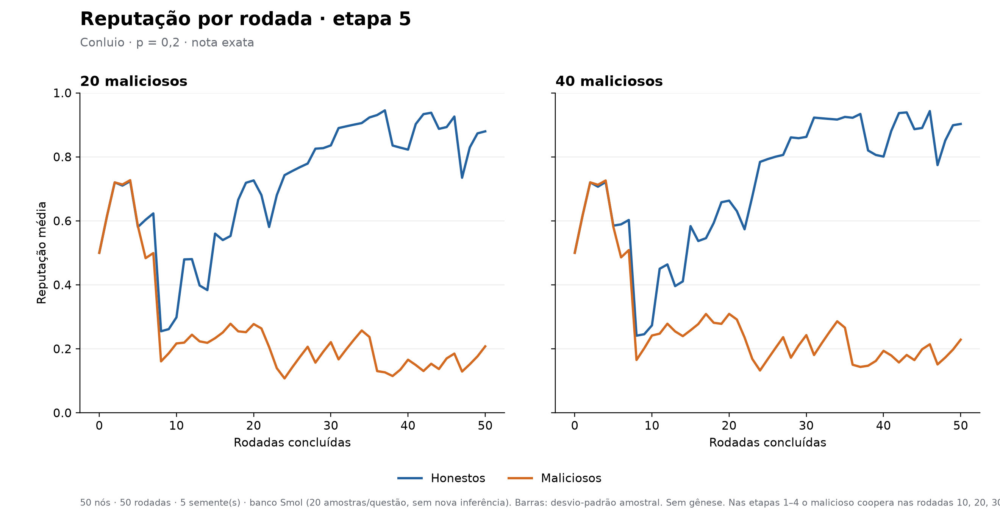

O que é esta série. História pedida pela Isabela: cada etapa muda uma coisa. Honestos sorteiam uma das 20 respostas pré-geradas do SmolLM3-3B no GSM8K; não há inferência nova. Medoide, orquestrador dinâmico, grafo 4-regular, ruído relativo δ = 0,2, EMA simétrica (αc = 0,05, αv = 0,95), sem gênese. Nas etapas 1 a 4 o malicioso coopera nas rodadas 10, 20, 30, 40 e 50. Acurácia nas rodadas sem gabarito. Barras = desvio-padrão amostral das cinco sementes. Não substitui as 3.670 execuções nem as figuras do artigo.
Eixo horizontal: 10, 20, 30 e 40 maliciosos em 50 nós (20%, 40%, 60% e 80%). Arquivos em cenarios-incrementais-smol/.
Etapa 1 · Caso base
Rede só com honestos, sem reputação ponderada (medoide sem pesos) e sem auditoria. A barra é o teto do banco neste recorte: 86,0% ± 1,4.

Etapa 2 · Entram os maliciosos
Sem conluio e ainda sem reputação. A queda é lenta até 60% e mais visível em 80% (64,4% ± 7,0). Sem coordenação, o medoide ainda encontra os honestos na maior parte das rodadas.

Etapa 3 · Entra o conluio
Os maliciosos passam a enviar o mesmo valor adulterado. A partir de 30 maliciosos (60%) a acurácia cai para cerca de 9%: maioria alinhada. Essa é a falha que as etapas seguintes tentam conter.

Etapa 4 · Reputação por consenso
A EMA entra, ainda sem auditoria. As curvas com e sem reputação quase coincidem. Sem gabarito, o peso sozinho não segura o conluio em maioria (continua ~9% com 30 ou 40 maliciosos).

Etapa 5 · Auditoria por sorteio
O gabarito entra em rodadas sorteadas. Com conluio, p = 0,2 recupera acurácia: 76,6% ± 10,0 com 30 maliciosos e 60,8% ± 9,3 com 40 (contra ~9% sem auditoria). p = 0,1 ajuda menos (58,2% e 37,2% nesses dois pontos).

Etapa 6 · Nota graduada × exata
Conluio e p = 0,2. A nota exata permanece mais alta em 60% e 80% maliciosos (~76,6% e ~60,8%). A graduada cai para 18,9% ± 14,2 e 14,3% ± 5,6.

Etapa 7 · Nós instáveis
20% dos nós instáveis (modo attribute), conluio, p = 0,2, nota exata. A curva fica próxima da etapa 5 sem instáveis (por exemplo 58,2% ± 6,9 com 40 maliciosos, contra 60,8% ± 9,3).

Síntese · evolução das defesas
Sem conluio, reputação e auditoria pouco se separam. Com conluio, o salto visível é a auditoria p = 0,2. A reputação sem gabarito não tira a rede do colapso em maioria.

Reputação ao longo das rodadas
Etapa 5, conluio, p = 0,2, nota exata. Depois da cooperação inicial, a reputação média dos honestos sobe e a dos maliciosos cai, com 20 e com 40 maliciosos.

Números (média ± DP, %)
Acurácia nas rodadas sem gabarito. n = 5 sementes.
| Condição | 20% | 40% | 60% | 80% |
|---|---|---|---|---|
| E2 sem conluio, sem reputação | 85,2 ± 1,8 | 82,4 ± 1,7 | 79,2 ± 1,8 | 64,4 ± 7,0 |
| E3 com conluio, sem reputação | 83,6 ± 3,6 | 71,2 ± 4,1 | 9,2 ± 1,1 | 9,2 ± 1,1 |
| E4 reputação, com conluio | 85,2 ± 2,7 | 70,0 ± 3,2 | 9,2 ± 1,1 | 9,2 ± 1,1 |
| E5 auditoria p = 0,2, com conluio | 87,2 ± 2,6 | 82,7 ± 6,1 | 76,6 ± 10,0 | 60,8 ± 9,3 |
| E6 nota graduada, conluio, p = 0,2 | 86,2 ± 3,1 | 76,0 ± 4,5 | 18,9 ± 14,2 | 14,3 ± 5,6 |
| E7 20% instáveis, conluio, p = 0,2 | 86,2 ± 3,9 | 84,2 ± 4,4 | 74,1 ± 8,6 | 58,2 ± 6,9 |
Caso base (etapa 1): 86,0 ± 1,4 com 0% maliciosos. Fonte: resultados/incremental/smol-banco-isabela/etapas.csv.